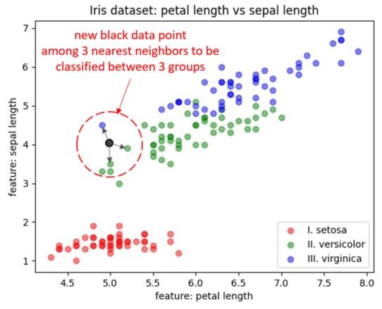

K Nearet Neighbors with Pure Math
Intro
K Nearest Neighbors is the algorithm that uses all of available classified cases for a model learning:
- All of the already classfied cases are called neighbours to the new taken case.
- Classified case means it has a label assigned to it.
- With this method we want to assign the label to a new case based on the distance comparison to all cases using distance function.
- K nearest neighbours means k as an amount of closest (similar with the value) cases.
Features
App includes following features:
Demo
- Here is the 150 sets of features.
- Each set of features is labeled with 0, 1, 3 in species column.
- Each row (still talkin about set) based on its feature values allows to label the set:
- e.g. first row,based on the feature values, is classified as 0 that symbolizes a specific species.
Application:
- We use the data already classified to train a model dividing data to the subsets:
- training samples - each sample is the set of featrues,
- training labels - for each training sample we have label assigned based on the sample's features,
- test samples - based on test samples we want to predict labels using trained model
--> we get prediction set as an outcome,
- test labels - we are using test labels to compare them with prediction outcome
--> we get assessment of a model reliability,
- The trained model classifies previously unseen data to a proper label.
- when model reliability is satisfing, we can take a new case with its features and classify it to a label.

- console prints info:
- test sample - list of features lists
- predicted labels - list of labels that corresponds to each list of features above
- calculating accuracy which is 100% in this case
- taking new features sample
- calculating predicted label
Setup
Script requires libraries installation:
- pip install pandas
- pip install numpy
- pip install matplotlib